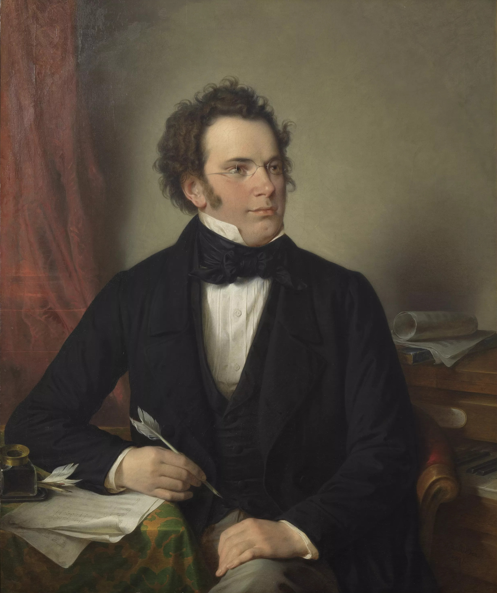

Grazer Fantasie in Do Maggiore D.605a
Introduzione
Franz Schubert (1797-1828) fu un grande compositore austriaco, egli scrisse questa opera attorno al 1818. Il manoscritto fu ritrovato nel 1962 a Graz, da cui il nome.
Questo brano possiede tutte le caratteristiche tipiche della Fantasia e ne rappresenta uno fra modelli più completi, riunendo improvvisazione scritta e diversità tematica con variazioni di umore e ritmo, tramite uno stesso filo conduttore per mantenere l'unità formale.
Testi consigliati
Un nobile della città di Assisi, desideroso di acquistare soldi e gloria, fa i preparativi militari per andare in Puglia. Venuto a sapere la cosa, Francesco è preso dal desiderio di andare con lui. Così, per essere creato cavaliere da un certo conte Gentile, prepara delle vesti il più possibile preziose; poiché, se era meno ricco di quel suo concittadino, era però più largo di lui nello spendere.
Una notte, dopo essersi impegnato anima e corpo nell'eseguire il suo progetto, e mentre bruciava dal desiderio di mettersi in marcia, viene visitato dal Signore, che sapendolo bramoso di onori, lo attira e lo innalza ai fastigi della gloria con una visione. Mentre in quella notte stava dormendo, gli apparve uno che, chiamatolo per nome (Cfr. Gen 4,17), lo condusse nello splendido palazzo di una bellissima sposa pieno di armature, cioè scudi splendenti e simili apparati di guerra che spettano al decoro dei cavalieri. Francesco, mentre dentro di sé si chiedeva in silenzio e con meraviglia che cosa fosse tutto questo, domandò a chi appartenessero quelle armi così splendenti e quel palazzo meraviglioso. Gli fu risposto che tutto quell'apparato insieme al palazzo era suo e dei suoi cavalieri
Svegliatosi, s'alzò quel mattino con l’animo pieno di gioia, tutto preso dal pensiero mondano (egli non aveva ancora gustato pienamente lo spirito di Dio) che sarebbe diventato un gran principe. Così, prendendo la visione come presagio di eccezionale fortuna, delibera di partire verso la Puglia, per esser creato cavaliere da quel conte.
Era si mostrava tanto più raggiante del solito, che a molti i quali se ne mostravano sorpresi e chiedevano donde gli venisse tanta allegria, rispondeva: «So che diventerò un grande principe».